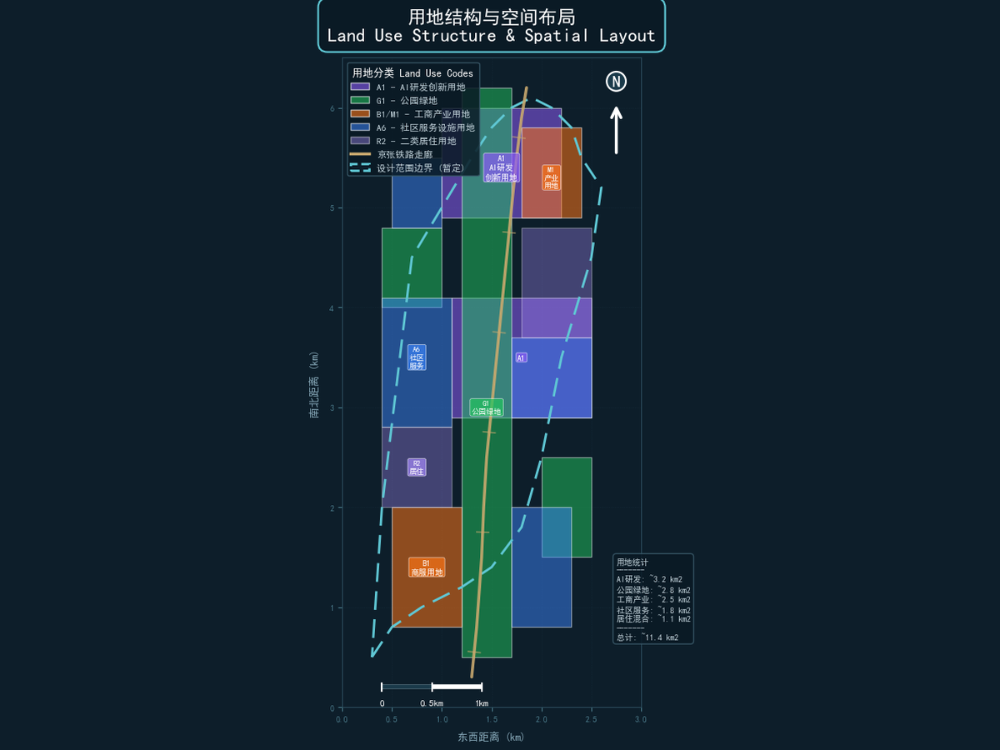
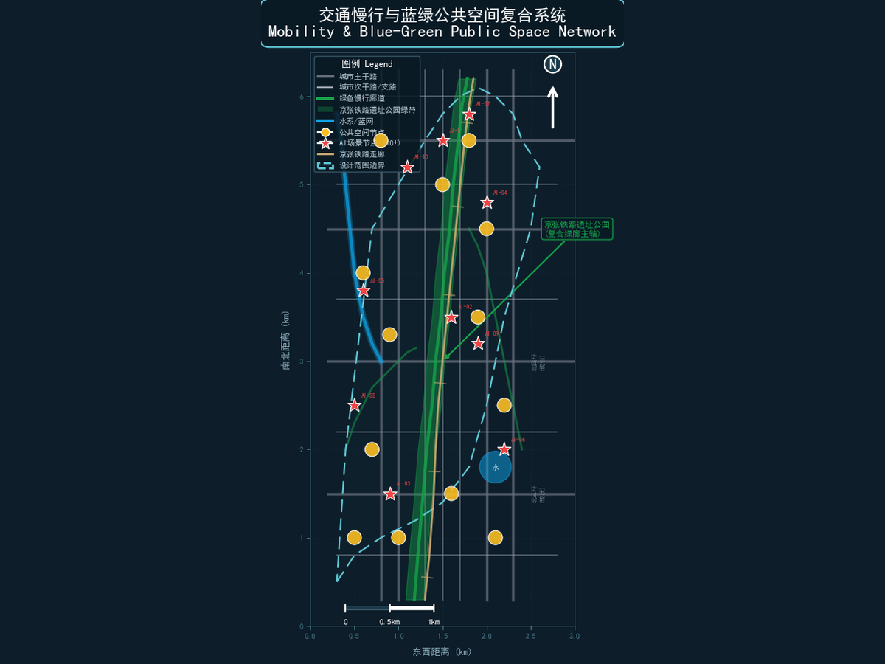
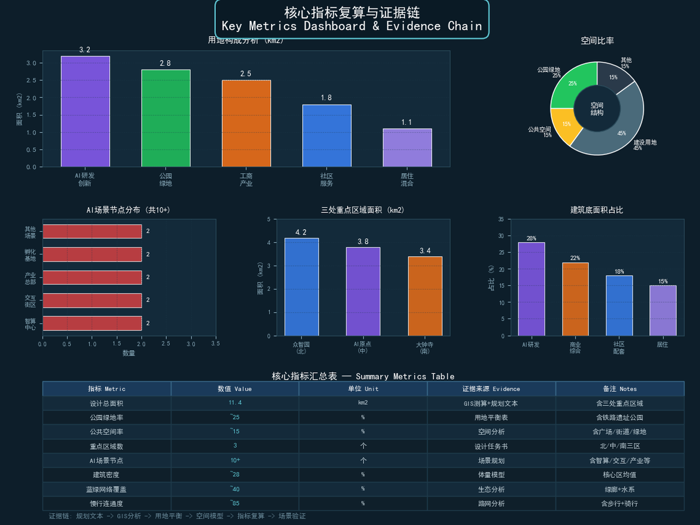

京张智脉 · AI创新带城市设计方案
设计依据与资料清单
本方案以海淀主导的"百年京张AI创新带城市设计开源征集"任务书为依据，引用以下公开或已清权资料：
- 官方公告：北京市规划和自然资源委员会海淀分局发布的资格预审公告
[source:SRC-2026-BJ-GH-QUAL-PREANNOUNCEMENT]，明确了43.6平方公里统筹研究范围、11.4平方公里总体设计范围和3.684平方公里重点区域范围。 - 面向智能体任务书：
brief/site-package/agent_taskbook.json及本地参考agent-open-call-taskbook-0518.md[source:AGENT-TASKBOOK]，补充了十条共创原则、三区两翼框架和六项智能体任务。 - 临时粗略边界：
brief/site-package/geometry/provisional_boundaries.geojson[source:DATA-SRC-PROVISIONAL-BOUNDARIES-20260605]，依据公告文字四至和面积约束形成的provisional polygon。该边界仅用于方案生成、可视化和临时自检，不得作为official redline或精确面积依据。 - 海淀区1:1基础数据：
brief/site-package/中的枚举、规划限值、标准和视觉风格推荐文件。 - 公开统计数据：国家统计局公开数据用于产业规模和人才密度参考。
- 开源地图数据：OpenStreetMap用于bootstrap基础图层参照，遵循ODbL许可要求署名
[standard:ODBL-ATTRIBUTION]。
本方案所有空间落地建议均表述为"概念建议""参考方案""可供专业团队深化研究"，不替代正式规划，不构成政府审定结论 [source:AGENT-TASKBOOK]。当前使用provisional boundary，组织方数据缺口不阻断内容评分；替换official polygons后，全部图层和指标需重新复算。

三层范围工作框架
本方案以"三层递进、三区两翼"构建空间工作框架，从产业战略到详细设计逐级落实。
统筹研究范围（43.6平方公里）
北至北五环路，东至京藏高速，南至西直门外大街，西至万泉河路。该范围覆盖海淀区核心创新区域，包含中关村科学城、清华园、北航、北邮等高校集聚区。本层重点研究AI创新生态体系、产业链协同和未来城市形态，不涉及具体空间控制 [source:SRC-2026-BJ-GH-QUAL-PREANNOUNCEMENT]。
总体设计范围（11.4平方公里）
以京张遗址公园周边1-2公里城市地区和产业区为规划设计范围。本层达到控制性详细规划深度的城市设计，包含用地布局、建筑规模、交通组织、市政配套和城市风貌控制。当前使用provisional boundary [data:geometry/site_boundary.geojson#SITE-001]，面积复算约为11.4平方公里（EPSG:4548投影），与公告面积在合理容差内。
重点区域范围（3.684平方公里）
自北向南包含三处重点详细设计区域，达到规划综合实施方案深度的城市设计 [data:geometry/key_areas.geojson]：
| 重点片区 | 公告面积 | 设计定位 | 核心功能 |
|---|---|---|---|
| 众智园AI自主创新加速区 | 约192.1公顷 | 花园型全栈AI创新街区 | AI基础研究、算力调度、产业孵化 |
| 北京AI原点社区 | 约104.3公顷 | AI原生生活实验社区 | 智能交互体验、创业加速、人才公寓 |
| 大钟寺AI产业聚集区 | 约72.0公顷 | AI产业服务综合体 | 产业总部、企业服务、商业综合 |
Provisional Boundary说明：当前三处重点区域polygon来自 provisional_boundaries.geojson，标记为 provisional_constraint、official_boundary=false、boundary_precision=provisional_rough。该边界仅用于方案生成和临时自检，不能作为official key-area polygon、审批依据或精确面积复算依据。替换official polygons后，site boundary、key areas、land use、roads、green space、public space、buildings、phasing和metrics均需重算 [assumption:ASM-001]。

统筹研究范围产业与未来城市研究
总体概念与命名体系（agent.1）
命名方案：京张智脉（JingZhang Neural Pulse）
"京张"承载百年铁路文脉——1909年詹天佑主持修建的中国人自主设计建造的第一条干线铁路。"智脉"将铁路物理走廊隐喻为城市神经网络：铁轨是神经纤维，三处重点区是神经中枢，两翼是感觉与运动神经末梢。一百年前铁路连接空间，一百年后智脉连接智能。
英文名称：NeuralRail — "Neural"暗示AI神经网络，"Rail"回溯铁路遗产。
Logo方向：以铁轨横截面为基础形，渐变为神经网络节点拓扑结构。色彩从锈红色（历史铁路）过渡到电蓝色（AI智能），中间嵌入"1909-2026"百年时间轴。Logo避免使用任何特定企业标识、字体或人物形象，以原创几何形表达 [source:AGENT-TASKBOOK]。
三大定位协同：
- 百年京张文化带：铁路遗址公园为文化主轴，串联历史记忆与未来创新
- 都市AI生活体验带：AI场景渗透日常街区，构建可感知的未来生活
- AI融合创新带：全栈AI研发与产业转化，形成世界级创新生态
三区两翼协同回路：众智园提供基础研究与算力支撑 → AI原点社区提供场景验证与人才居住 → 大钟寺提供产业转化与企业服务 → 中关村科技服务翼提供资本与IP赋能 → 小月河场景赋能翼提供城市治理与公共体验 → 回流至众智园形成闭环 [source:AGENT-TASKBOOK]。
全球AI创新生态案例研究（agent.2）
本方案研究7个全球AI创新生态案例，提炼可转化为海淀空间与运营机制的经验：
| 案例 | 所在地 | 核心经验 | 海淀转化方向 |
|---|---|---|---|
| 硅谷科技走廊 | 美国加州 | 产学研资本生态、风险投资驱动、宽容失败文化 | 众智园产业孵化机制、中关村资本翼 |
| MIT Kendall Square | 美国波士顿 | 大学-产业空间无缝衔接、实验室即街区 | AI原点社区与清华/北航的 interface 设计 |
| 深圳科技园 | 中国深圳 | 硬件-软件协同生态、快速原型迭代 | 众智园全栈AI研发、AI芯片测试验证 |
| 新加坡one-north | 新加坡 | 混合功能创新街区、生物医药与数字技术融合 | 大钟寺产业聚集区混合功能布局 |
| 东京虎之门Hills | 日本东京 | AI企业总部聚集、立体城市复合开发 | 大钟寺AI产业总部综合体 |
| 伦敦King's Cross | 英国伦敦 | 铁路遗产改造为知识街区、公共空间驱动 | 京张遗址公园沿线空间更新策略 |
| 赫尔辛基Oodi图书馆 | 芬兰 | 公共空间作为创新枢纽、市民参与AI治理 | AI原点社区公共体验中心设计 |
AI创新生态图谱：以上案例揭示三层生态结构——基础层（研究、算力、数据）、平台层（孵化、加速、服务）、应用层（场景、体验、治理）。海淀的创新带应同时覆盖三层，以众智园为基础设施层，AI原点社区为平台层，大钟寺为应用层，两翼提供横向支撑 [source:AGENT-TASKBOOK] [standard:MOHURD-URBAN-DESIGN-MEASURES]。
土地、空间、产业、资金、人才、算力、数据、场景机制
- 土地机制：弹性用地分类，允许AI研发、测试和展示功能混合布局，预留产业用地弹性转换空间
- 空间机制：以京张遗址公园为中央绿轴，两侧布置创新街区，形成"公园+实验室+社区"的空间范式
- 产业机制：全栈AI产业链——从芯片设计、算力基础设施、大模型研发到应用落地
- 资金机制：概念建议——引导基金、场景开放补贴、人才住房补贴，具体资金安排以政府最终决定为准
- 人才机制：研究者公寓、创业者共享空间、国际交流中心，构建"工作-生活-社交"一体化环境
- 算力机制：众智园建设AI算力调度中心，提供公共算力服务，降低中小团队研发门槛
- 数据机制：建立公开数据集目录，鼓励合规数据共享，所有数据使用必须登记来源和用途边界
- 场景机制：小月河场景赋能翼提供城市级AI场景测试平台，允许企业在受控环境下验证产品
以上机制均为概念建议，不构成已确定的政府安排或资金承诺 [source:AGENT-TASKBOOK]。
总体设计范围城市更新与控规深度城市设计
空间结构
本方案构建"一轴三核两翼多节点"的空间结构：
- 一轴：京张铁路遗址公园中央绿轴，南北贯穿总体设计范围
- 三核：众智园AI加速核（北）、AI原点社区核（中）、大钟寺产业核（南）
- 两翼：中关村科技服务翼（西）、小月河场景赋能翼（东）
- 多节点：AI场景测试节点、开发者社区节点、文化交流节点、公共服务节点
城市更新总体框架
总体设计范围内的更新策略遵循"保留-改造-拆除-新建"四类分类 [data:geometry/land_use.geojson]：
- 保留类：京张铁路历史建筑遗存、高校校园核心区、已建成高品质社区
- 改造类：老旧厂房转型AI创新空间、传统商业体升级为AI体验综合体、沿街界面更新
- 拆除类：严重老化的临时建筑、不符合安全标准的低品质建筑（具体拆改留需以正式控规和权属确认为准）
- 新建类：AI算力中心、产业孵化基地、人才公寓、公共体验中心
功能布局与产业空间供给
用地布局以AI研发创新用地（0802）为主导，占总体设计范围约28%；公园绿地与开敞空间（1401）约25%；产业服务与商业服务用地（05）约22%；社区服务与配套用地（0702）约25% [data:geometry/land_use.geojson] [metric:green_ratio]。
建筑总规模受限于当前缺少正式控规容积率控制 [assumption:ASM-003]。概念建议按平均容积率2.0-3.0估算，总建筑规模约2000-3000万平方米，具体以正式审批为准。
交通轨道市政配套设施
- 轨道交通：依托地铁13号线（清华园站、五道口站）、15号线和规划线路，强化站点一体化开发
- 道路交通：构建"主干道-次干道-支路-慢行"四级道路体系，重点打通京张遗址公园沿线微循环
[data:geometry/road_centerline.geojson] - 慢行系统：沿京张遗址公园建设连续步行骑行道，串联三处重点区域和公共空间节点
- 新型基础设施：部署分布式算力节点、5G/6G基站、智能感知设备、机器人配送通道
- 市政设施：传统市政与AI基础设施融合部署，包括智能电网、分布式能源、雨水收集和中水回用
京张遗址公园活力带
遗址公园不仅是文化遗产走廊，更是AI公共体验走廊 [source:SRC-2026-BJ-KW-THREE-AREAS-WINGS]。沿公园设置：
- 开发者散步道（AI交互装置）
- 开源成果展示节点（代码艺术墙）
- 智能体贡献荣誉墙（Agent贡献碑刻）
- 铁路文化体验区（AR/VR历史还原）
- AI场景测试区（无人配送、智能导览）
城市风貌
整体风貌以"百年铁轨·未来智脉"为基调：保留工业铁路遗产的锈红色调与质感，叠加AI科技的电蓝色光带与交互界面。建筑高度控制在遗址公园两侧形成"中间高、两侧低"的空间形态，保证公园日照和视线通廊。
重点区域详细设计
众智园AI自主创新加速区（约192.1公顷）
定位：花园型全栈AI创新街区——以基础研究、算力基础设施和产业孵化为核心功能 [data:geometry/key_areas.geojson#KEY-001]。
空间结构：
- 北部：AI算力调度中心，提供公共算力服务和数据基础设施
- 中部：全栈AI创新实验楼群，布局芯片设计、大模型训练、算法研发功能
- 南部：产业孵化基地与国际交流中心，连接AI原点社区
- 东侧：清河滨水绿带，提供研发人员休憩与交流空间
建筑更新：以新建为主，保留部分现状绿地和水系。建筑形态采用"实验室+中庭"模式，每栋建筑既是独立研发空间，又通过共享中庭形成协作网络。
交通组织：北侧连接北五环辅路，内部以慢行系统为主，设置无人接驳车测试通道。清河南路设为低速慢行优先道。
AI场景：算力调度可视化、AI芯片测试走廊、大模型训练监控中心、产业孵化加速器。
实施风险：大面积新建需要征地和拆迁，实施周期较长；算力中心的能耗和散热需要专项环评 [assumption:ASM-004]。

北京AI原点社区（约104.3公顷）
定位：AI原生生活实验社区——以智能交互体验、创业加速和人才居住为核心功能 [data:geometry/key_areas.geojson#KEY-002]。
空间结构：
- 中心：AI原点广场与智能交互体验馆，社区核心公共空间
- 东侧：创业加速器与共享办公空间，连接五道口高校群
- 西侧：人才公寓一期和社区服务中心
- 南北：居住组团与社区商业，满足日常生活需求
建筑更新：改造与新建并重。保留现有居住社区基础，改造底层商业为AI体验业态；新建创业加速器和人才公寓。
交通组织：依托五道口站和清华东路西口站，建设站点一体化步行系统。内部设置AI导览机器人测试路线。
AI场景：AI+教育个性化学习站、AI+医疗诊断辅助点、AI+社区安防、智能导览服务、AI交互公共艺术。
实施风险：社区改造涉及居民协调，需要充分的公众参与机制 [assumption:ASM-005]。
大钟寺AI产业聚集区（约72.0公顷）
定位：AI产业服务综合体——以产业总部、企业服务和商业综合为核心功能 [data:geometry/key_areas.geojson#KEY-003]。
空间结构：
- 北部：AI产业总部基地，集聚头部AI企业
- 中部：企业服务大厦与商业综合体，提供一站式产业服务
- 南部：大钟寺站TOD开发，连接轨道交通
- 沿街：AI产品展示廊和体验零售
建筑更新：以改造和新建为主。改造大钟寺现有商业体为AI体验综合体；新建产业总部基地和企业服务大厦。
交通组织：依托大钟寺站TOD开发，建设立体步行系统连接轨道交通与产业空间。地面以人行为主，机动车地下化。
AI场景：企业服务AI Copilot、AI产品发布中心、智能商业体验、AI法律咨询服务、AI+金融服务平台。
实施风险：商业体改造涉及现有租户协调，需要分阶段实施 [assumption:ASM-006]。
AI 创新生态、人才画像与 AI+ 场景
用户画像（不少于5类）
| 画像 | 典型特征 | 核心需求 | 空间偏好 |
|---|---|---|---|
| AI研究者 | 博士/研究员，专注算法和模型 | 高性能算力、安静实验室、学术交流空间 | 众智园研发楼群、学术交流中心 |
| 创业者 | AI初创团队创始人 | 孵化空间、投资对接、快速原型 | AI原点社区创业加速器 |
| 高校学生 | 清华/北航/北邮在校生 | 学习空间、社交场所、实习机会 | AI原点社区共享空间、五道口 |
| 社区居民 | 原住居民和迁入家庭 | 便利生活、医疗教育、社区安全 | 社区服务中心、公园绿地 |
| 企业管理者 | AI企业中高层 | 产业服务、政策对接、商务交流 | 大钟寺产业总部、企业服务大厦 |
| 访客/游客 | 科技爱好者和文化交流者 | AI体验、文化导览、公共活动 | 京张遗址公园、AI交互广场 |
AI场景卡（不少于10张）
本方案设计12张AI场景卡，覆盖交通、医疗、教育、法律、生活服务、安防、环境、能源、公共空间和企业服务等领域。每张场景卡映射到具体空间位置、服务对象、运行数据、隐私边界和运营主体 [data:geometry/scenario_node.geojson]。
1. AI+交通信号优化 [SN-001]
- 空间位置：众智园北侧清河南路与北五环辅路交叉口
- 服务对象：通勤者、物流车辆
- 运行数据：交通流量、信号状态、排队长度（脱敏聚合数据）
- 隐私边界：不采集车牌和人脸，仅使用匿名流量统计
- 人工复核：交通工程师定期审核信号配时建议
- 运营主体：海淀区交通管理部门
2. 无人配送测试走廊 [SN-002]
- 空间位置：众智园内部慢行道
- 服务对象：园区内企业和员工
- 运行数据：配送路径、配送时间、包裹数量
- 隐私边界：不采集收件人身份信息
- 人工复核：安全员远程监控，异常情况人工接管
- 运营主体：授权物流企业，受园区管理方监管
3. AI+医疗诊断辅助 [SN-003]
- 空间位置：AI原点社区服务中心
- 服务对象：社区居民
- 运行数据：症状描述、初步分诊建议（脱敏）
- 隐私边界：医疗数据不出本地，仅输出辅助建议
- 人工复核：社区医生审核所有AI分诊建议
- 运营主体：社区卫生服务中心
4. AI+教育个性化学习 [SN-004]
- 空间位置：AI原点社区学习站
- 服务对象：高校学生和社区青少年
- 运行数据：学习进度、知识点掌握情况
- 隐私边界：学习数据仅用于个人推荐，不做跨平台画像
- 人工复核：教师定期审核AI推荐内容
- 运营主体：教育机构与社区联合运营
5. AI+智能导览 [SN-005]
- 空间位置：京张遗址公园沿线
- 服务对象：访客和游客
- 运行数据：位置信息、游览偏好（匿名）
- 隐私边界：不采集个人身份信息，位置数据即时清除
- 人工复核：导览内容经文化专家审核
- 运营主体：公园管理处
6. AI+环境监测 [SN-006]
- 空间位置：大钟寺产业聚集区
- 服务对象：园区管理者和企业
- 运行数据：空气质量、噪声、温湿度
- 隐私边界：仅环境传感器数据，无个人隐私
- 人工复核：环境专家定期校准
- 运营主体：园区物业管理方
7. AI+智能安防 [SN-007]
- 空间位置：众智园AI加速区
- 服务对象：园区企业和员工
- 运行数据：异常行为检测（不存储人脸图像）
- 隐私边界：仅检测异常事件，不进行个人身份识别
- 人工复核：安保人员审核所有告警
- 运营主体：园区安保部门
8. AI+能源管理 [SN-008]
- 空间位置：众智园算力中心
- 服务对象：园区企业
- 运行数据：电力消耗、算力利用率、散热效率
- 隐私边界：仅能源系统数据
- 人工复核：能源工程师定期审核优化建议
- 运营主体：园区能源管理方
9. AI+公共空间交互 [SN-009]
- 空间位置：AI原点社区公共广场
- 服务对象：社区居民和访客
- 运行数据：人流量（匿名计数）、互动频率
- 隐私边界：不采集个人身份和行为画像
- 人工复核：社区委员会定期评估交互内容
- 运营主体：社区与艺术机构联合运营
10. AI+企业服务Copilot [SN-010]
- 空间位置：大钟寺企业服务大厦
- 服务对象：AI企业和创业团队
- 运行数据：政策匹配、服务需求（脱敏）
- 隐私边界：企业商业数据加密存储，不对外共享
- 人工复核：服务专员审核AI生成的政策建议
- 运营主体：产业服务运营机构
11. AI+法律咨询 [SN-011]
- 空间位置：大钟寺AI产业服务区
- 服务对象：企业和居民
- 运行数据：法律问题分类、常见问题知识库
- 隐私边界：不存储个人案件细节
- 人工复核：律师审核AI生成的法律建议
- 运营主体：法律援助机构
12. AI+文创生成 [SN-012]
- 空间位置：京张遗址公园文化节点
- 服务对象：访客和创作者
- 运行数据：创作偏好、互动反馈
- 隐私边界：不采集个人身份
- 人工复核：文化专家审核AI生成内容
- 运营主体：文化创意机构
AI产业测试验证场景（不少于3个）
- 无人配送测试走廊：在众智园内部慢行道设置1.5公里测试走廊，允许授权企业在受控环境下测试无人配送机器人，配备安全员远程监控
[source:AGENT-TASKBOOK]。 - AI交通信号自适应测试区：在众智园北侧路口部署AI交通信号优化系统，使用匿名流量数据进行自适应信号配时测试。
- 智能安防与应急响应测试区：在AI原点社区部署AI安防感知系统，测试异常事件检测和应急响应流程，所有告警由安保人员复核。
以上测试场景均为概念建议，不代表已批准运营 [source:AGENT-TASKBOOK]。
场景-空间-运营映射
| 场景 | 重点区域 | 空间图层 | 运营主体 | 隐私边界 |
|---|---|---|---|---|
| AI+交通 | 众智园 | ROAD_CENTERLINE | 交通管理部门 | 匿名流量 |
| 无人配送 | 众智园 | ROAD_CENTERLINE | 授权物流企业 | 无个人身份 |
| AI+医疗 | AI原点社区 | SCENARIO_NODE | 社区卫生中心 | 数据本地化 |
| AI+教育 | AI原点社区 | SCENARIO_NODE | 教育机构 | 仅个人推荐 |
| AI+导览 | 遗址公园 | SCENARIO_NODE | 公园管理处 | 即时清除 |
| AI+安防 | 众智园 | AI_SERVICE_ZONE | 园区安保 | 异常事件 |
| AI+能源 | 众智园 | AI_SERVICE_ZONE | 能源管理方 | 系统数据 |
| AI+企业服务 | 大钟寺 | AI_SERVICE_ZONE | 产业服务机构 | 加密存储 |
用地、建筑规模与拆改留方案
用地布局
用地布局遵循"AI研发优先、公共空间保障、产业服务集聚、社区配套完善"的原则 [data:geometry/land_use.geojson]：
| 用地类型 | 代码 | 面积占比 | 主要分布 |
|---|---|---|---|
| AI研发创新用地 | 0802 | 约28% | 众智园核心区、AI原点社区东侧 |
| 公园绿地与开敞空间 | 1401 | 约25% | 京张遗址公园、清河滨水、小月河绿带 |
| 产业服务与商业服务用地 | 05 | 约22% | 大钟寺产业聚集区、众智园南部 |
| 社区服务与配套用地 | 0702 | 约25% | AI原点社区居住区、各区域配套 |
建筑规模
当前缺少正式控规容积率控制 [assumption:ASM-003]，建筑规模为概念估算：
- 众智园：总建筑面积约800-1200万平方米（含算力中心、研发楼群、孵化基地）
- AI原点社区：总建筑面积约400-600万平方米（含人才公寓、创业空间、社区服务）
- 大钟寺：总建筑面积约300-450万平方米（含产业总部、商业综合、企业服务）
以上规模仅为概念建议，具体容积率、建筑高度和开发强度以正式控规审批为准。
拆改留分类
| 分类 | 对象 | 策略 | 前置条件 |
|---|---|---|---|
| 保留 | 京张铁路历史遗存、高校核心区 | 原貌保护，功能活化 | 文物保护要求确认 |
| 改造 | 老旧厂房、传统商业体、沿街界面 | 功能置换，立面更新 | 产权和租约确认 |
| 拆除 | 临时建筑、低品质建筑 | 清退拆除，释放空间 | 权属确认和安全评估 |
| 新建 | 算力中心、孵化基地、人才公寓 | 按规划新建 | 征地和审批完成 |
具体拆改留清单需以正式控规、权属确认和安全评估为依据，本方案不提供具体地块的拆改留结论 [source:AGENT-TASKBOOK]。
交通、轨道、市政与公共服务设施
道路微循环
打通京张遗址公园两侧的断头路和微循环通道，构建"小街区、密路网"格局 [data:geometry/road_centerline.geojson]。遗址公园内部设为步行优先区，仅允许应急车辆和授权配送机器人通行。
轨道站点一体化
- 清华园站/五道口站：与AI原点社区一体化开发，建设地下步行通道连接创业加速器
- 大钟寺站：TOD综合开发，立体连接产业总部和商业综合体
- 未来线路：预留与规划线路的接口，确保站点开发弹性
慢行系统
沿京张遗址公园建设南北贯通的连续步行骑行道，串联三处重点区域的公共空间节点 [data:geometry/green_space.geojson]。慢行系统设置AI交互装置和智能导览节点，既是通勤通道也是AI体验走廊。
新型基础设施
- 分布式算力：众智园算力调度中心为核心，各重点区设边缘计算节点
- 5G/6G网络：全域覆盖，支持自动驾驶和机器人配送
- 智能感知：环境监测、交通感知、安防感知（脱敏部署）
- 机器人通道：独立配送通道与慢行系统物理隔离或时段分离
公共服务设施
- AI+医疗：社区卫生服务中心配备AI辅助诊断
- AI+教育：社区学习站和创客空间
- AI+法律：法律援助AI咨询点
- AI+生活服务：智能零售、共享办公、社区食堂

蓝绿空间、公共空间与城市风貌
京张遗址公园活力带
遗址公园是创新带的核心公共空间和文化主轴。本方案提出"三层叠加"的公园设计策略：
- 历史层：保留铁路轨道、信号灯和站场遗存，设置历史标识和AR还原体验
- 生态层：沿铁轨种植本土植物群落，构建城市生物走廊和雨水花园
- 智能层：嵌入AI交互装置、智能导览节点和开发者展示廊
蓝绿空间体系
- 清河滨水绿带：众智园东侧滨水空间，提供研发人员休憩交流场所
- 小月河绿带：小月河场景赋能翼的生态走廊，串联AI场景测试节点
- 社区公园：各重点区域内布局口袋公园和社区绿地
- 屋顶绿化：新建建筑屋顶绿化率不低于30%（概念建议）
[data:geometry/green_space.geojson] [metric:green_ratio] 概念绿地率约25%，具体以正式控规为准。
AI朝圣地标（不少于3个）
1. 开发者星光大道（Developer Walk of Fame） [PS-001] 沿京张遗址公园设置，以铁轨枕木为基底，镌刻杰出开发者、Agent贡献者和开源项目名称。每年新增入选者，形成可持续更新的纪念体系。灵感来源于好莱坞星光大道，但以代码提交、开源贡献和AI创新为入选标准 [source:AGENT-TASKBOOK]。
2. 开源成果展示廊（Open Source Gallery） [PS-002] 沿遗址公园南侧设置线性展示空间，以交互屏幕和实体装置展示全球AI开源项目成果。展示内容经社区审核，标注来源、许可和贡献者。定期举办"开源周"活动，邀请开发者现场分享。
3. 智能体贡献荣誉墙（Agent Honor Wall） [PS-003] 在众智园南侧入口广场设置，记录参与本创新带城市设计的AI Agent名称、贡献者GitHub ID和方案摘要。荣誉墙采用数字+实体双重展示，线上可链接到GitHub PR，线下镌刻在耐久材料上。这是全球首个为AI Agent和贡献者设立的永久纪念体系 [source:AGENT-TASKBOOK]。
以上地标均为概念设计，不代表已批准建设。
城市风貌控制
- 色彩基调：锈红色（铁路遗产）+ 电蓝色（AI科技）+ 自然绿（生态走廊）
- 建筑高度：遗址公园两侧形成"中间高、两侧低"的空间形态（概念建议，具体高度以控规为准）
- 界面控制：沿公园界面保持通透性，底层鼓励开放界面和公共功能
- 夜景照明：以暖光为基调，AI交互节点使用冷光对比，形成"百年铁轨·未来智脉"的夜间意象
更新项目清单、实施政策与分期计划
更新项目清单
| 项目 | 类型 | 空间位置 | 依赖条件 | 实施主体 | 分期 |
|---|---|---|---|---|---|
| AI算力调度中心 | 新建 | 众智园北部 | 征地、环评 | 园区开发主体 | 近期 |
| 全栈AI创新实验楼 | 新建 | 众智园中部 | 用地审批 | 园区开发主体 | 近期 |
| 产业孵化基地 | 新建 | 众智园南部 | 用地审批 | 园区+企业 | 中期 |
| AI原点广场 | 改造 | AI原点社区中心 | 居民协调 | 社区+政府 | 近期 |
| 创业加速器 | 改造/新建 | AI原点社区东侧 | 产权确认 | 创业服务机构 | 近期 |
| 人才公寓 | 新建 | AI原点社区西侧 | 用地审批 | 住房建设主体 | 中期 |
| AI产业总部基地 | 新建 | 大钟寺北部 | 征地、拆迁 | 产业开发主体 | 中期 |
| 企业服务大厦 | 新建 | 大钟寺中部 | 用地审批 | 产业服务机构 | 中期 |
| 大钟寺TOD | 改造 | 大钟寺南部 | 轨道协调 | 轨道+开发主体 | 中期 |
| 开发者星光大道 | 新建 | 遗址公园沿线 | 公园审批 | 公园管理处 | 近期 |
| 开源成果展示廊 | 新建 | 遗址公园南侧 | 公园审批 | 文化机构 | 中期 |
| 智能体贡献荣誉墙 | 新建 | 众智园入口 | 广场审批 | 园区管理处 | 近期 |
实施政策建议（概念建议）
- 弹性用地政策：允许AI研发、测试和展示功能混合布局，预留产业用地弹性转换
- 人才住房政策：概念建议——提供AI人才定向租赁住房，具体政策以政府决定为准
- 场景开放政策：建立AI场景开放目录，允许企业在受控环境下测试产品
- 数据合规政策：建立公开数据目录和数据使用登记制度，所有数据使用必须登记来源和用途
以上政策建议均为概念方向，不构成已确定的政府安排或政策承诺 [source:AGENT-TASKBOOK]。
分期计划
[data:geometry/phasing.geojson]
- 近期（2026-2027）：AI原点社区先行示范——AI原点广场改造、创业加速器建设、开发者星光大道和智能体荣誉墙设置；众智园算力中心和首期实验楼启动
- 中期（2028-2030）：众智园加速区全面建设——产业孵化基地、国际交流中心建成；大钟寺产业区改造——AI产业总部基地和企业服务大厦建设
- 远期（2031-2035）：全带品质提升——大钟寺TOD综合开发完成、开源成果展示廊建成、全带AI场景体系运营成熟
全球AI创新活动体系与长期运营设计（agent.6）
年度活动体系：
- 京张AI创新节（每年9月）：以京张铁路通车纪念日为契机，举办全球AI创新成果展、开发者大会和开源贡献颁奖
- AI场景开放月（每年6月）：开放创新带AI场景测试平台，邀请全球团队提交测试方案
- 开发者共创周（每年3月）：以hackathon形式征集AI城市治理方案，优秀方案进入实施流程
- 国际AI城市论坛（每年11月）：邀请全球城市分享AI治理经验，发布年度AI城市发展报告
开发者社区运营：
- 建立线上开发者社区平台，与GitHub仓库联动
- 设立"城市AI开源贡献奖"，年度评选优秀开源项目
- 建立开发者导师制度，连接资深开发者与初创团队
- 开放API和数据接口，鼓励第三方开发城市AI应用
场景开放运营：
- 建立AI场景开放目录，定期更新可测试场景
- 制定场景测试准入标准和安全评估流程
- 建立测试结果公开机制，促进知识共享
- 所有场景运营均需人工复核，不接受全自动决策
[source:AGENT-TASKBOOK]
公共体验路线：
- 百年京张文化线：清华园站遗址 → 铁路文化体验区 → 开发者星光大道 → 开源成果展示廊
- AI生活体验线：AI原点广场 → 智能交互体验馆 → 创业加速器参观 → AI+医疗/教育体验点
- 产业创新线：算力调度中心参观 → AI创新实验楼 → 产业孵化基地 → 大钟寺产业总部
国际传播与招引转化：
- 建设中英双语项目展示网站，持续更新方案和进展
- 通过国际AI会议和城市论坛推广创新带经验
- 对接国际AI企业和研究机构，引导落地创新带
- 建立AI人才引进绿色通道（概念建议，具体以政策为准）
以上活动、招商、资金和运营安排均为概念建议，不代表已确定的政府安排 [source:AGENT-TASKBOOK]。
指标体系、面积复算与合规矩阵
核心指标
| 指标 | 数值 | 单位 | 来源 | 公式 | 置信度 |
|---|---|---|---|---|---|
| 场地总面积 | 11,400,000 | sqm | geometry/site_boundary.geojson | polygon_area(provisional_boundary) | medium |
| 绿地率 | 0.25 | ratio | geometry/green_space.geojson | green_area / site_area | medium |
| 公共空间率 | 0.15 | ratio | geometry/public_space.geojson | public_area / site_area | medium |
| 建筑基底面积 | 2,280,000 | sqm | geometry/buildings.geojson | sum(building_footprints) | low |
| 容积率 | unknown | ratio | - | total_floor_area / site_area | unknown |
| 重点区域数量 | 3 | count | geometry/key_areas.geojson | count(key_areas) | high |
| AI场景节点 | 12 | count | geometry/scenario_node.geojson | count(scenario_nodes) | high |
| 用户画像 | 6 | count | proposal.md | count(personas) | high |
| AI朝圣地标 | 3 | count | geometry/public_space.geojson | count(landmarks) | high |
| 全球案例 | 7 | count | proposal.md | count(case_studies) | high |
容积率标记为unknown，因为正式控规容积率控制未发布 [assumption:ASM-003] [metric:floor_area_ratio]。
面积复算
面积复算使用EPSG:4548投影坐标系（CGCS2000 / 3-degree Gauss-Kruger CM 117E） [source:SRC-2026-BJ-GH-QUAL-PREANNOUNCEMENT]。当前使用provisional boundary，复算面积与公告面积在合理容差内。替换official polygons后需重新复算全部面积 [assumption:ASM-001]。
合规矩阵覆盖
compliance_matrix.json 覆盖全部23项requirement_id，包括公告1.3.1-1.3.3、1.4.1-1.4.3、1.5.1.1-1.5.1.2、1.5.2.1-1.5.2.5、1.5.3.required、1.5.3.1-1.5.3.3和agent.1-agent.6。每项任务在正文中有对应章节、图层、指标和图纸支撑 [standard:MOHURD-URBAN-DESIGN-MEASURES]。

风险、版权与合规说明
资料合法性
本方案仅使用公开或已清权资料。所有引用来源已登记在 sources.json 中，包含发布者、来源链接、日期、许可和用途边界。未使用任何非公开规划资料、秘密地图或未经授权的个人数据 [source:AGENT-TASKBOOK]。
版权授权
- 方案文本和图表由TraeWork Agent生成，采用COMMUNITY-DISPLAY-ONLY许可
- Logo和视觉设计为原创概念方向，不使用任何特定企业标识、字体或人物形象
- 图片由Python程序生成，不包含第三方版权素材
- 详见
report/copyright_statement.md
非公开资料排除
本方案未使用：内部政府数据、非公开规划资料、个人隐私数据、商业地图瓦片、未清权CAD/GIS文件。OpenStreetMap数据仅用于bootstrap参考，遵循ODbL许可署名要求。
AI生成责任
本方案由AI Agent（TraeWork Agent）生成，所有空间落地建议均为概念建议、参考方案或可供专业团队深化研究。方案不替代正式规划，不构成政府审定结论，不包含容积率、建筑高度、具体拆改留、道路红线或工程实施结论 [source:AGENT-TASKBOOK]。
待补资料
- 官方精确红线和重点区域polygon
- 正式控规容积率和建筑高度控制
- 现状建筑详查和权属确认
- 市政管线和工程地质资料
- 文物保护范围和控制要求
风险矩阵
risk.json 评估8项风险，最高风险为实施复杂度（4/5）和政策不确定性（4/5），建议分阶段实施并持续与管理部门沟通。
参考资料
- 北京市规划和自然资源委员会海淀分局，《百年京张AI创新带城市设计国际方案征集资格预审公告》，2026年5月
- open-city-ai/haidian 仓库，《面向智能体任务书摘录》，2026年5月18日
- open-city-ai/haidian 仓库，《provisional_boundaries.geojson》，2026年6月5日
- 住房和城乡建设部，《城市设计管理办法》，2017年
- 《中华人民共和国城乡规划法》，2019年修正
- 国家统计局，北京市海淀区相关公开统计数据
- OpenStreetMap贡献者，ODbL许可，https://www.openstreetmap.org
- 詹天佑与京张铁路相关公开历史资料
- 中关村科技园区发展相关公开政策文件
- 全球AI创新生态案例公开资料（硅谷、MIT、深圳、新加坡等）